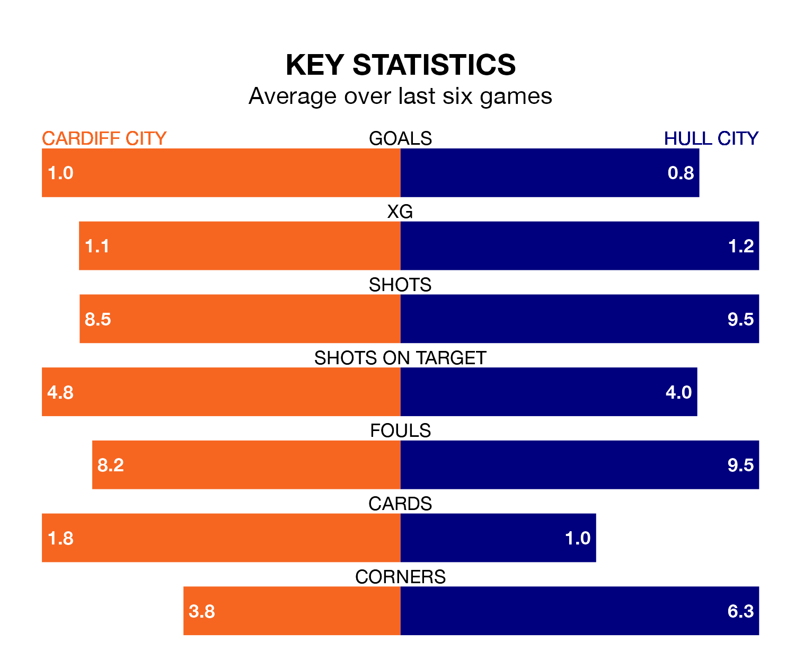

Hull City travel to the Cardiff City Stadium looking to secure a first win in seven EFL Championship games against Cardiff City on Saturday.
The Tigers have lost two and drawn four matches since they last earned three points – against Southampton on February 20.
They face a Cardiff side who have won four and lost two over that time.
In the last 10 years, Cardiff and Hull have played each other on 11 occasions. Cardiff won three of them, Hull seven, and they drew once.
On average, the Bluebirds scored 1.0 goal and the Tigers 1.5 in those matches.
Their last meeting was on December 16, when Hull won 3-0 at home.
With 45 goals in 40 games so far this season, Cardiff are scoring at below the league average rate with 1.1 goals per game. And they are conceding at an average rate, letting in 54 goals at a rate of 1.4 per game.
Hull, meanwhile, are average scorers, with 1.4 goals per game. They have conceded 1.3 goals per game.
Hull City are ninth in the table after 39 games, of which they have won 16 and drawn 10, earning 58 points.
Cardiff City are two places behind the Tigers in 11th, with 17 wins and five draws putting them on 56 points.
Cardiff's last match was on Monday, a 2-1 win against Coventry City, with Liam Kitching getting the goals for the Bluebirds.
Hull lost 3-1 against Leeds United last time out, also on Monday, with Fabio Carvalho on the scoresheet.
Saturday's match will be refereed by John Busby, who has taken charge of 21 EFL Championship games so far this season, issuing one red card and booking 84 players. He has awarded four penalties.
The last Cardiff game Busby refereed was a 1-0 away win against Watford on February 3. His last Hull match was their 2-1 loss at home against Watford on December 2.
Updated: 16:41 (UTC), 04/04/24